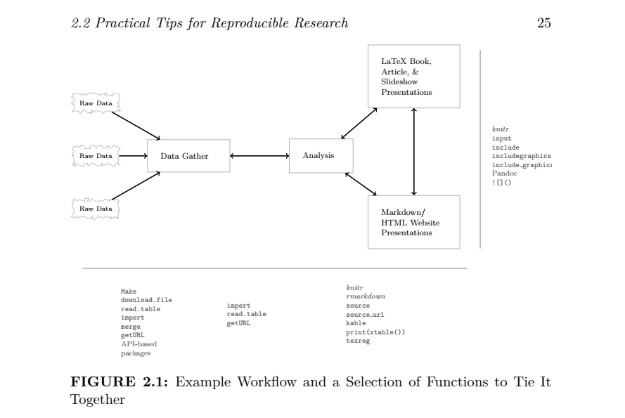
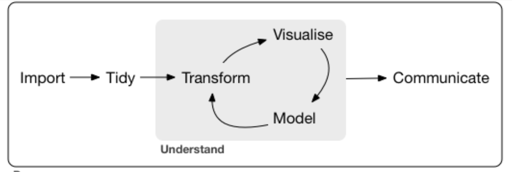
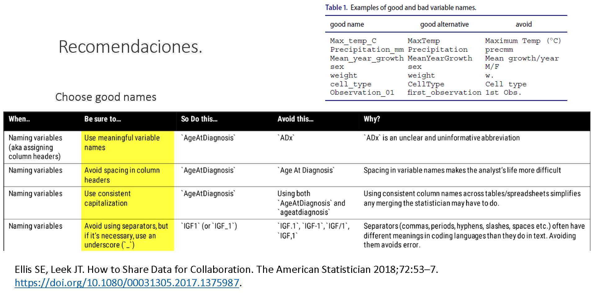
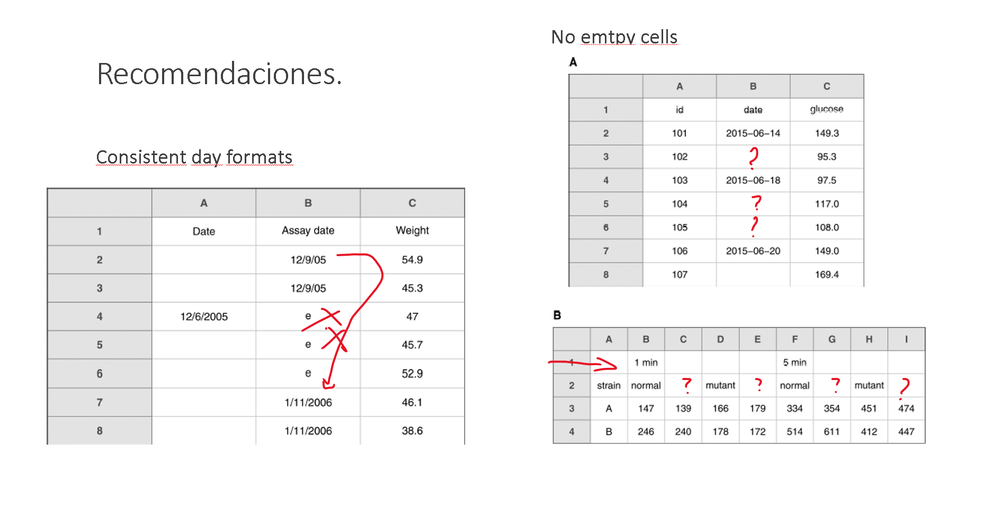
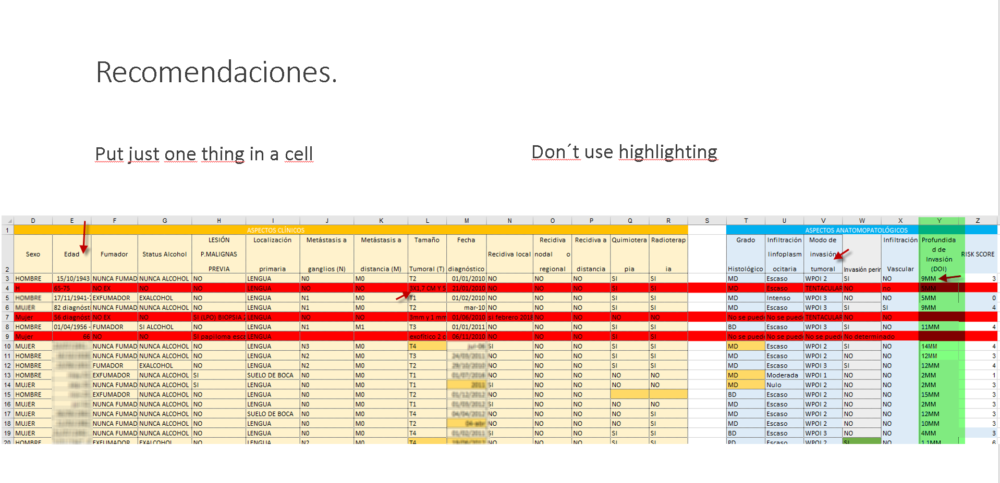

Práctica 1
Recopilar datos
Antes de comenzar…
La crisis de la reproducibilidad..
Aunque con frecuencia se utilizan como sinónimos, en investigación reproducibilidad y replicabilidad no significan lo mismo.
Un estudio de investigación es reproducible si al repetir el análisis utilizando los mismos métodos de investigación (no solo el mismo análisis estadístico, pero también dicho análisis) sobre los mismos datos obtenemos los mismos resultados. Indica que el estudio fue realizado conforme se indica, incluyendo el análisis.
Un estudio de investigación es replicable si repitiendo el proceso de investigación con la misma metodología, pero sobre nuevos datos obtenemos los mismos resultados, lo que indica que podemos confiar en sus conclusiones. Las razones para la falta de replicabilidad no son solo achacables
- Reproducibilidad (reproducibility) y replicabilidad (replicability) condicionan la fiabilidad (reliability) de nuestros hallazgos.
- La reproducibilidad es condición necesaria pero no suficiente para la replicabilidad.

Este documento no aborda aspectos como la instalación de R y RStudio, aspectos bien cubiertos en muchos otros recursos, algunos mencionados en la bibliografía.
El siguiente esquema trata de representar el flujo de trabajo habitual en cualquier proyecto de data science independientemente de su envergadura.
En la preparación de cualquier trabajo de investigación en el que nosotros nos encarguemos del análisis pasaremos por todas o casi todas estas fases.
En sentido estricto, el análisis estadístico sería el ciclo Transform-Visualise-Model, pero es imposible llegar a estas fases si no se completan los pasos anteriores. De igual manera, sería extraño realizar un análisis para no comunicarlo, por lo que, aunque las siguientes notas no siguen exactamente este esquema, es importante tratar de pensar a qué fase corresponde todo lo que veremos en los seminarios prácticos, por lo que con frecuencia recurriremos a este esquema.

Sesión P1 Criterios de buena praxis en la recopilación de datos.
Como veremos al termina la sección, no siempre contamos con la mejor solución a la hora de recoger los datos, pero esto no evita la necesidad de recogerlos con la mayor calidad posible, tarea que comienza incluso antes de su recogida. Siendo esencial, en esta sesión no hablaremos de la importancia de la definición adecuada de las variables, algunos de cuyos aspectos habrán sido ya comentados en las clases presenciales. En este texto solo daremos algunas pautas para mejorar su introducción en el primero soporte disponible antes a su importación al software de análisis.
Buenas prácticas sobre gestión de datos.
Poco textos sobre estadística incluyen un apartado sobre buenas prácticas en la introducción de datos, posiblemente porque asumen que el análisis empieza cuando los datos están listos.
Sin embargo, cualquier persona dedicada al análisis de datos le dirá que el 75% de su trabajo consiste en “limpiar los datos” Ruiz (2017). Aquí no estamos hablando del diseño del estudio, de la ausencia de sesgos, de la calidad (errores de medida) con la que se recogen las variables, o de si el tamaño muestral es o no el adecuado para nuestro fin. Hablamos de la cantidad de trabajo que hay que dedicar porque la base de datos que recibimos no sigue algunos principios básicos para poder analizarla con la mínima intervención.
Nunca será suficiente el tiempo invertido a esta cuestión, por eso incluyo aquí algunos principios recogidos en este artículo Wickham (2014) y por supuesto en el libro Grolemund and Wickham (2017) de Grolemund y Hadley Wickham, cofundador y científico jefe de RStudio™ (ahora Posit™).
Recomendaciones.
Puede ampliar la información en el artículo de Broman and Woo (2018) y en la web de datacarpentry The Carpentries (n.d.), donde encontrará multitud de consejos sobre cómo no utilizar las hojas de cálculo para recoger datos.
Spreadsheets
- Be consistent
- Choose good names for things
- Write dates as YYYY-MM-DD
- No empty cells
- Put just one thing in a cell
- Don’t use font color or highlighting as data
- Save the data as plain text files
Carrie Wright, Shannon Ellis, Stephanie Hicks and Roger D. Peng. Tidyverse Skills for Data Science in R (Posición en Kindle124-126). leanpub.com.
Be consistent, concretamente…
- “Use consistent codes for categorical variables”-> avoid m, male, Male, mal…
- “Use a consistent fixed code for any missing values.” -> NA. Avoide numbers (999), do not insert notes.
- “Use consistent variable names”: Chol_1mth, then Chol_6mth…
- “Use consistent subject identifiers.”: (histclin, specimenid,…) KeyField!
- “Use a consistent data layout in multiple files.” : Evita trabajo extra al analista al combinarlos.
- “Use consistent file names.” Ejemplo “hiv_tfgm_2022_03_01.csv”, * “hiv_tfgm_2022_04_03.csv”
- “Use a consistent format for all dates” ‘YYYY-MM-DD’ ISO8601 (si otro, siempre igual. Cuidado con Excel)
- “Use consistent phrases in your notes” (Si las tienes, puede que quieras analizarla.
- “Be careful about extra spaces within cells.”
Good variable names.

Date formats+not empty cells.

Just one thing in a cell + don´t use highlighting as data.

Save as .csv.
Aunque es posiblemente uno de los tipos de archivo más usados para recopilar datos, en realidad Excel está lejos de ser un programa diseñado para este fin, y recientemente el uso de su antiguo formato (.xls) produjo un importante error en Reino Unido al ser utilizado en la recopilación de datos durante la pandemia por SARS-Cov2 Kelion (2020). Aunque la culpa no era de MSExcel, cuyo formato desde 2007 (.xlsx) no tiene la limitación del antiguo, lo cierto es que se suele recomendar evitar su uso para recopilar datos.
Las bases de datos profesionales utilizan otros lenguajes y formatos. En R existen paquetes que permiten importar datos de la mayoría de estas fuentes, incluso de otros programas de análisis (SPSS, Stata, SAS…) pero, aunque no existiesen, cualquiera de ellos es capaz de exportarlos a un pequeño archivo .csv (comma separated values), que es a su vez importable desde todos ellos, también por R. Esto convierte al formato .csv en un formato frecuente en el intercambio de datos cuando no existe otro camino.

Aunque podríamos “crear” y editar los datos en el propio R1, esto no es recomendable, entre otras cosas por la pérdida de reproducibilidad que conlleva, y por la ausencia de controles de entrada que sí están disponibles en las bases de datos que utilizan formularios que permiten asegurar cierta calidad durante su introducción, por ejemplo mediante listas desplegables que impiden introducir valores no incluidos en ellas o mediante filtros de valor que evitan introducir valores imposibles (p.ej. edad =999).
Dicho esto, es obvio que muchos usuarios que sabrían rellenar una hoja de Excel (en el fondo una estructura tabular), no cuentan con conocimientos suficientes para crear una base de datos utilizando una estructura de tablas relacionadas, asociadas a formularios con controles de entrada sobre consultas SQL, y tampoco cuentan con apoyo técnico para poder hacerlo, por lo que muchos no tendrán más remedio que recurrir a archivos .xlsx. De hacerlo, es aún más importante seguir las recomendaciones anteriores de cara a facilitar su importación y reducir los errores de introducción.
Por todo lo expuesto, lo más frecuente es que los datos crudos hayan sido recogidos en alguno de estos formatos (también en Excel), por nosotros mismos o por terceros, y por lo tanto debemos ser capaces de importarlos. Esto lo veremos en siguientes sesiones.
Por último, algunos de los paquetes de R (ya veremos qué es esto) incluyen datos que permiten seguir los ejemplos. En la siguiente sesión también veremos cómo cargarlos (en este caso no es una importación) de forma sencilla.
Referencias.
References
Footnotes
Con crear y editar, me estoy refiriendo a introducir y modificar los datos crudos, no a las modificaciones posteriores para construir nuevas variables mediante transformación, cálculo o recodificación↩︎